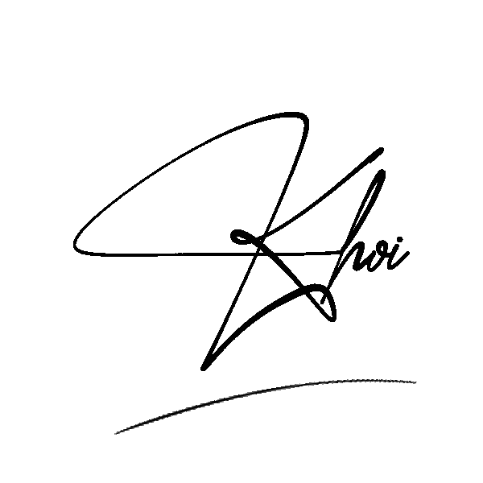

dear Hân Kumori,
Oh wow 3 năm r cơ à...
Hihi t viết trên áo ch đủ nên là h viết thêm nè.
Ý là lúc mới vào l10 ý quả tnhien th hà chỉ t với m xong t kiểu ôi vcl kiểu này c3 khó nch (hihi ldo nghĩ v kbt tsao). Nma kiểu sau dần cũng thấy m friendly thân thiện đồ (hiền thì đéo dmm toàn chửi t).
Xong m còn kiểu vào cùng clb với t xong dm còn abcdxyz (ê t dbt mô tả nnao nên viết nthe =))) )
Uh xong nhiều lúc t thấy t nch kiểu xàm chó vcloz xong cứ tdn ý mà m vẫn nghe t?? Ê á ý là k nghĩ có đứa sẵn sàng nghe t mấy lúc nthe mà vẫn bth luôn nha m.
Xong ý mấy lần buổi đêm t cứ sợ ma tiktok (uh đừng kể ai t sợ ma 🤗) mà dm t nhắn quả giờ vcloz xong còn xàm chó mà m vẫn nhắn để tbm đỡ =))) dc cơ. Dm xong còn mấy lúc t hỏi m mấy chuyện tcam ncc ý xong m, uh chính m là người nói cái t cần nghe chứ kph t muốn nghe. Chính m là người chửi t vcloz để t nhận ra t bị ... (uh chửi đúng vl đ cãi dc). NOI CHUNG LA m lúc đ nào cũng nghe t nói chuyện dc mà chuyện clg m cũng nghe t á, mdu t biết m có cả vde của riêng m nữa nma m vẫn sẵn sàng nghe t xà lơ đủ kiểu. Kiểu m là đứa t đủ tin tưởng để có thể kể những chuyện mà t k nghĩ t sẽ kể ai luôn ý, m tạo cho t cảm giác an toàn vcll. Tnhien nghĩ sau này k còn chung lớp với má nữa t cũng buồn á má, v nên là dù gì thì cũng đừng end tình bạn này nhs (sau bố còn mượn tiền đi làm nail 💅). Hihi thra t muốn nói nữa nma t bị mất gốc tviet =)))), v nen la du co nhu nao cung dung ket thuc cai tinh chi em bo cap nay nhs =))). À VỚI CẢ M PHẢI ĐỖ NEU CHO T NHỚ CHƯA. DCU M Đ ĐỖ LÀ TRỪ 1 TÌNH BẠN DMMMM. hihi chắc v thoi, à btw du m co nhu nao thi t cung luon san sang nghe m ke nhung van de cua m nhs, co qua co lai moi toai long nhau ma xd. T ghét (quý) m nhiều hơn hqua và ít hơn hôm nay. GHÉT VCL
Người làm phiền m cả 3 năm c3

Nguyễn Cảnh Khôi